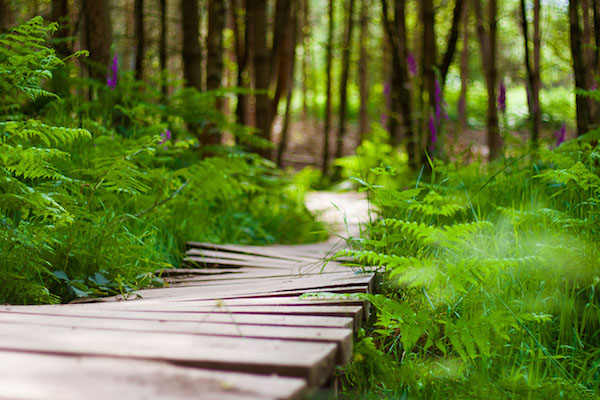

MONKEY TRAIL
The Monkey Trail is an adventure walk through a natural forest where monkeys roam freely above you. As you walk along the wooden boardwalk, you will see different species of monkeys swinging from trees, playing and chattering. It feels like you are walking through a real jungle in the middle of the zoo.
The trail is about 500 meters long and is shaded by tall trees, making it a cool and peaceful walk even on hot days. Keep your eyes open and your camera ready because you never know when a curious monkey will come close to say hello. Please remember not to feed them as they have their own special diet.
It is perfect for families who love a bit of adventure and want to experience monkeys in a more natural setting rather than behind glass.
WHERE WILL YOU FIND IT
The Monkey Trail is in the centre of the zoo, starting near the monkeys enclosure.